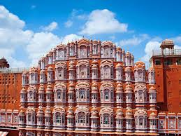
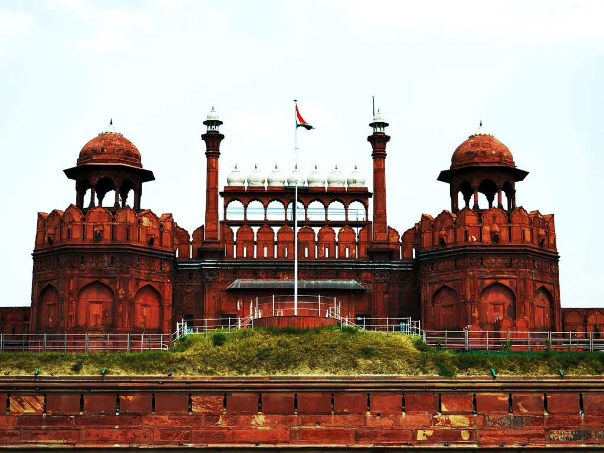
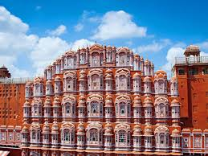
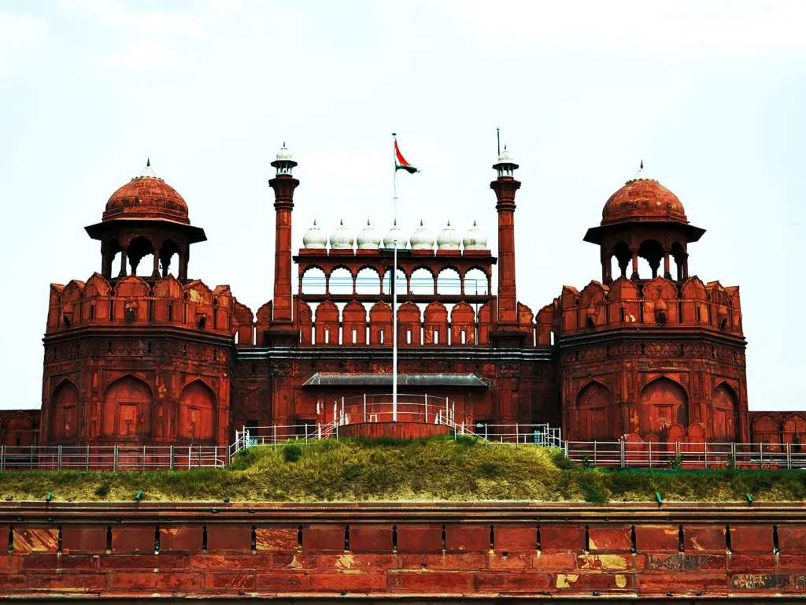
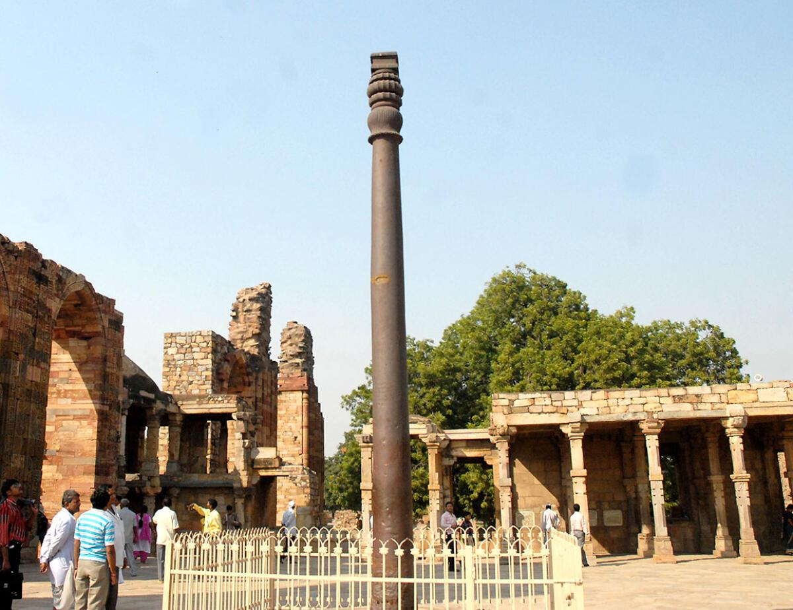
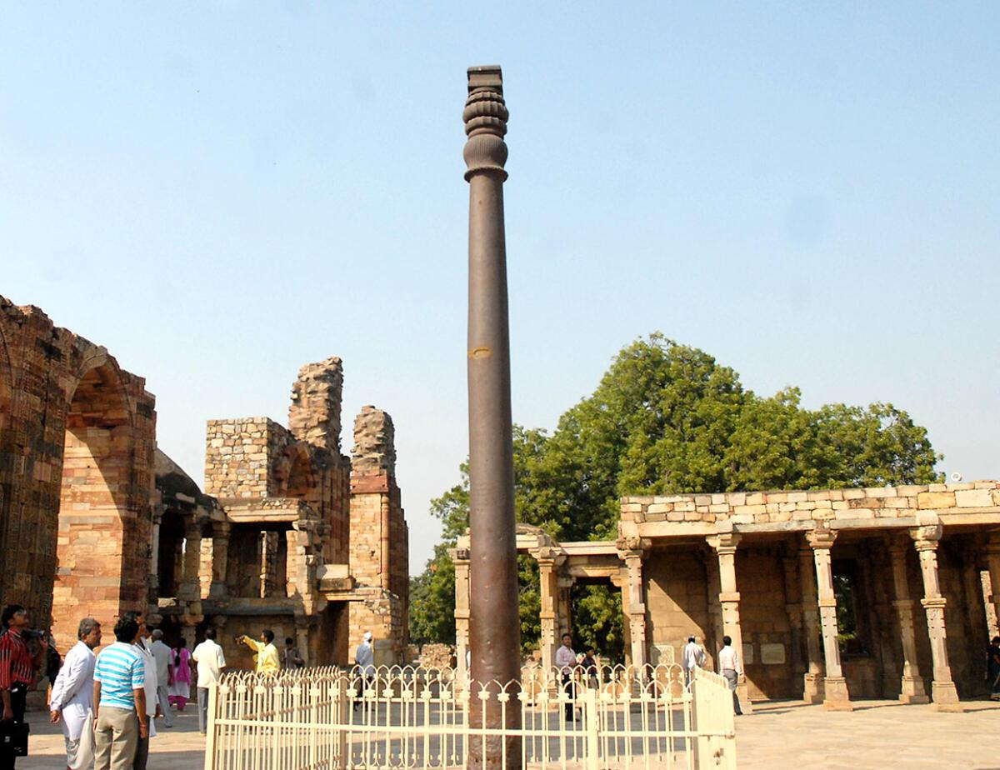
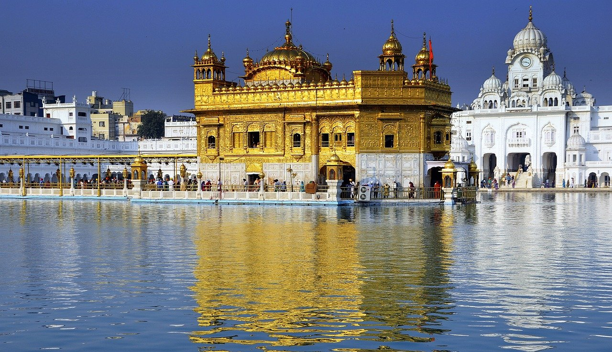
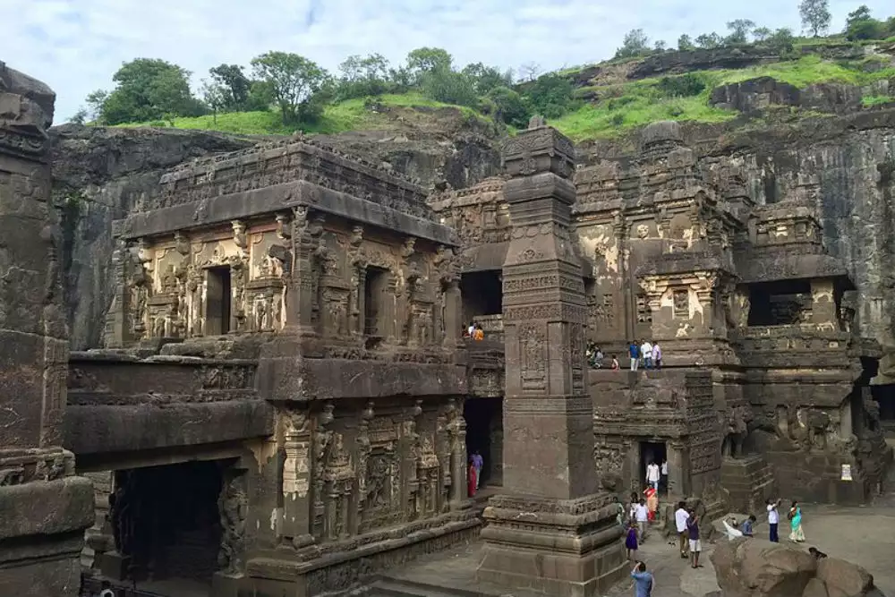
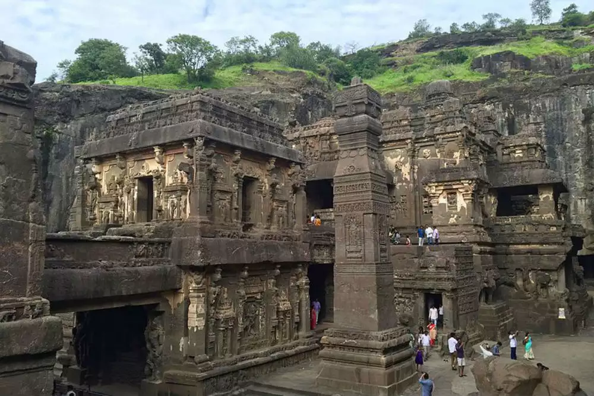

Learn about some interesting Indian Monuments!
-
Qutub Minar
 

The Qutub Minar is The Qutub Minar, located in Delhi, India, is a magnificent 73-meter-tall tower that stands as a symbol of victory. Built in 1193 CE by Qutb-ud-din Aibak, the founder of the Delhi Sultanate, it was constructed to celebrate his military conquests and the establishment of Muslim rule in India. The tower is made of red sandstone and features intricate carvings and inscriptions from the Quran. An interesting feature in the Qutub complex is the Iron Pillar, a 1,600-year-old structure that has intrigued scientists for centuries because of its remarkable resistance to rust despite being exposed to Delhi's climate. This architectural masterpiece is a UNESCO World Heritage Site and a must see!
Find more information here! -
Golden Temple
The Golden Temple, also known as Sri Harmandir Sahib, is located in Amritsar, Punjab, India, and is the most important spiritual site in Sikhism. Built in 1604 CE by Guru Arjan Dev, the fifth Sikh Guru, the temple was designed to symbolize inclusivity, with doors open to people of all religions and backgrounds. Its mesmerizing gold-covered dome reflects beautifully in the surrounding sacred pool, known as the Amrit Sarovar, which is believed to have healing powers. An interesting fact about the Golden Temple is its langar (community kitchen), which serves free meals to over 50,000 people daily, promoting the values of equality and selfless service.
Find more information here! -
Ajanta and Ellora Caves
 

The Ajanta and Ellora Caves are located in Maharashtra, India, and are among the most significant examples of ancient rock-cut architecture and artwork. The Ajanta Caves, built between the 2nd century BCE and 6th century CE, are a series of Buddhist temples and monasteries, featuring beautiful murals that depict the life of the Buddha and various Jataka tales. The Ellora Caves, which date from the 5th to 10th century CE, are unique for their mix of Hindu, Buddhist, and Jain temples, with the stunning Kailasa Temple being carved from a single piece of rock. An interesting fact about the Ellora Caves is the Kailasa Temple, which is an engineering marvel, as it was carved entirely from the top down, making it the largest monolithic structure in the world.
Find more information here!